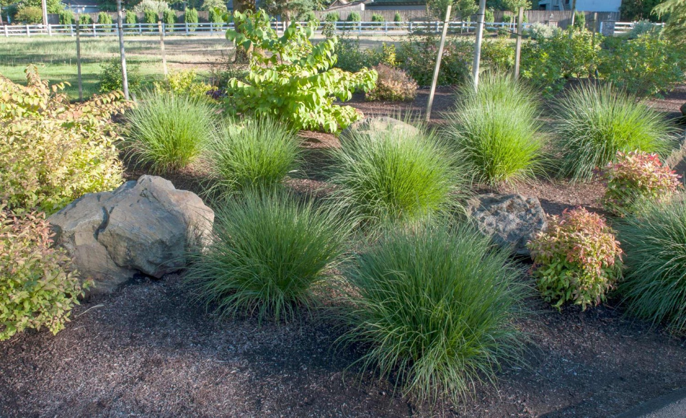

PlantingThe Best Plants for Pacific Northwest Winters
Most landscapes look great in June. The ones that look great in January are the ones designed with winter in mind. Here are the plants we reach for when building four-season interest into a Pacific Northwest garden.
Read More